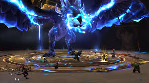

Wejdź do Azeroth, świata pełnego przygód, tajemnic i epickich bitew. Od monumentalnych miast po dzikie ostępy, World of Warcraft (WoW) zaprasza, byś stworzył własną legendę w jednym z najbardziej kultowych MMORPG w historii.
Fabuła WoW opiera się na wieloletniej historii zapoczątkowanej przez serię Warcraft. Od pradawnego konfliktu między Przymierzem a Hordą po wzloty i upadki bogów, królów i tyranów, Azeroth to świat, w którym każda postać i lokacja ma swoją opowieść. Niezależnie od tego, czy szturmujesz bramy Orgrimmar, czy eksplorujesz lodowe pustkowia Northrend, lore towarzyszy ci na każdym kroku.
World of Warcraft oferuje coś dla każdego. Weź udział w wielkich bitwach z innymi graczami w PvP, podejmij się epickich lochów i rajdów ze swoją gildią lub po prostu eksploruj Azeroth we własnym tempie. Mechaniki gry są zaprojektowane tak, by były zarówno przystępne, jak i głębokie, oferując satysfakcjonujące doświadczenie zarówno dla casualowych graczy, jak i zapalonych raiderów.

Od bujnych lasów Elwynn po spalone słońcem pustynie Tanaris, Azeroth to cud projektowania. Każda strefa ma unikalną estetykę, wypełnioną zadaniami, skarbami i tajemnicami do odkrycia. Bezszwowe przejścia między strefami i kontynentami sprawiają, że świat wydaje się żywy i spójny, zachęcając graczy do zagubienia się w jego rozległości.
Jednym z największych atutów WoW jest jego społeczność. Niezależnie od tego, czy łączysz siły, aby pokonać groźnego bossa rajdu, czy bierzesz udział w ożywionych dyskusjach na czacie handlowym, aspekt społeczny jest sercem gry. Dołącz do gildii, nawiązuj przyjaźnie i doświadczaj wspólnoty płynącej z dzielonych przygód.

Od premiery w 2004 roku World of Warcraft doczekał się licznych rozszerzeń, które dodawały nowe treści, klasy i strefy. Ekspansje nie tylko odświeżały grę, ale także rozwijały lore i mechaniki, zapewniając, że WoW pozostaje żywą i stale rozwijającą się grą.
| Cecha | Opis |
|---|---|
| Data premiery | 23 listopada 2004 |
| Producent | Blizzard Entertainment |
| Wydawca | Blizzard Entertainment |
| Tryby gry | PvE, PvP, Rajdy, Odgrywanie Ról |
| Platformy | PC, macOS |